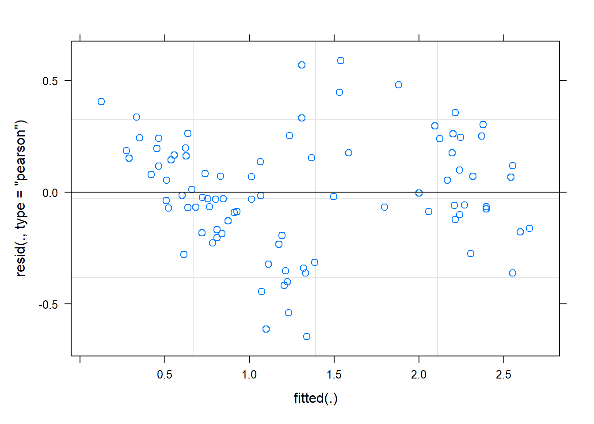
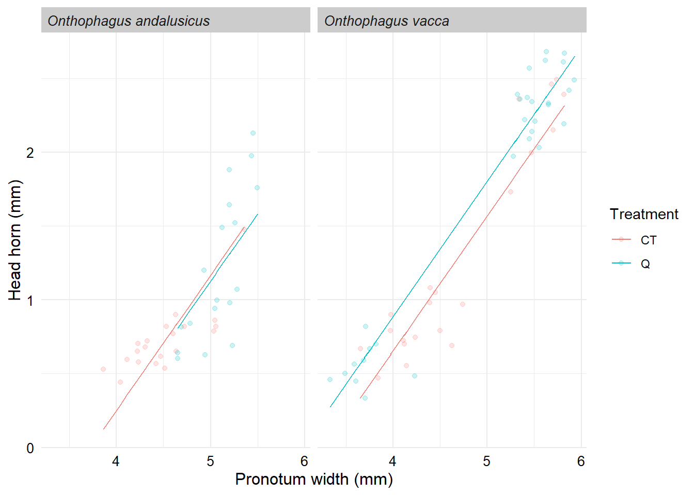
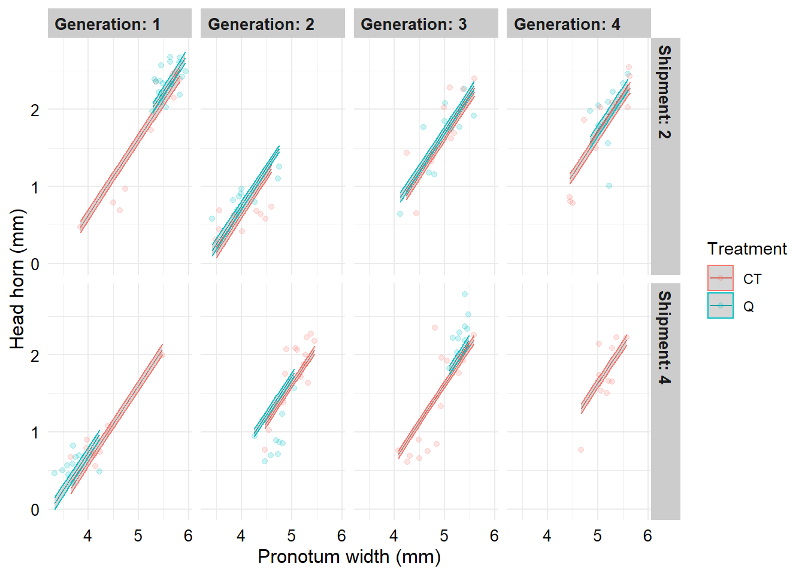

Data modelling
Setup
Here we load the packages, set the ggplot theme and load the data.
Set the ggplot theme for all plots.
theme_set(theme_minimal())
theme_update(strip.text = element_text(face = "bold", size=10, hjust=0),
strip.background = element_rect(fill = "grey80", colour = NA),
axis.text = element_text(size=10, colour = "black"),
axis.title = element_text(size=12, colour = "black"))Import the data.
Hypothesis #1a
First we want to know whether the treatment had an immediate effect on beetle morphology, and whether this effect differed for the two species.
Recall from our data exploration that two of the Onthophagus vacca shipments did not have both treatments. We will filter these out for this analysis, as well as generations other than the first generation.
Here, we first look at the effect on pronotum width.
Step 1: pepare the data
Step 2: fit the model
Here we fit the model that tests whether there is a treatment effect on pronotum width, if this differs by species (treatment*species term), if males and females differ in their pronotum width (sex term) and whether there were any differences among the different shipments (the (1|shipment) random effect term).
# Fit the model
m1_pw <- lmer(pronotum_width ~ treatment*species + sex + (1|shipment),
data = db_data_F1)Step 3: check model assumptions
# Fitted vs residuals plot
plot(m1_pw)# Histogram of residuals
ggplot(data = augment(m1_pw), aes(x = .resid)) +
geom_histogram()Those diagnostic plots look OK to me.
Step 4: look at model results
Now that we have fit our model and checked that the model assumptions look OK, we want to know the answer to the questions we are asking our model to investigate (see above).
We will use the Anova function from the car package (notice the capital ‘A’) to test the statistical significance for each model term.
Important There are lots of problems with P values and null hypothesis significance testing. These are important to be aware of but that is not the focus of this unit. We can discuss these during our next meeting.
Anova(m1_pw)Step 5: understand the model results
Our model is telling us that we have evidence for an effect of treatment on pronotum width and that this effect depends on the species being measured (statistically significant treatment:species term).
What is difficult to understand from the model output is how the treatment is affecting pronotum width and how this effect differs for each species.
To understand these effects we can look at the estimated marginal means:
m1_pw_emm <- emmeans(m1_pw, ~treatment*species)
# Test for a treatment effect for each species separately
contrast(m1_pw_emm, by = "species") %>% tidy()We can see that for both species those beetles in the CT treatment tend to be smaller, but that this effect is larger for Onthophagus andalusicus.
Step 6: visualise model predictions alongside raw data
So far this has been all very ‘black box’ - we have run a model and got some results. We have some idea of what the model is telling us, but how well does the model reflect the raw data? It’s also often much easier to communicate our results using a figure rather than just numbers in a table.
The following figure plots the the mean pronotum width for each species/treatment combination that is predicted by the model, the standard errors for these means, along with the raw data points.
# Notice the use of tidy() from the generics package
ggplot(data = tidy(m1_pw_emm),
aes(x = treatment, y = estimate, colour = treatment, shape = treatment)) +
geom_point(size = 2) +
geom_errorbar(aes(ymin = estimate - std.error, ymax = estimate + std.error), width = 0) +
geom_jitter(data = db_data_F1, aes(x = treatment, y = pronotum_width, colour = treatment), width = 0.2, alpha = 0.2) +
# The following line could be used to change the colours
#scale_colour_viridis_d() +
facet_wrap(~species, ncol = 2) +
labs(y = "Pronotum width (mm)", x = "Treament") +
theme(legend.position = "none") +
theme(strip.text = element_text(face = "italic"))
Hypothesis #1b
Above we looked at pronotum width, now let’s ask the same questions but examining head horns. Because head horn size will increase with pronotum width, we want to look at the size of the horn relative to body size. To do this we simply include pronotum_width as another explanatory variable.
We will follow the same steps as we did with pronotum width…
Step 1: prepare the data
Already done! Move to step 2.
Step 2: fit the model
# Fit the model
m1_hh <- lmer(head_horn ~ pronotum_width + treatment*species + (1|shipment),
data = db_data_F1)boundary (singular) fit: see help('isSingular')You will see we get an error: boundary (singular) fit: see help(‘isSingular’).
This is not an uncommon error, and seems to be happening because there is no variation associated with ‘shipment’. Increasing our sample size may help with this. For now I think it’s fine to push on.
Step 3: check model assumptions
# Fitted vs residuals plot
plot(m1_hh)
# Histogram of residuals
ggplot(data = augment(m1_hh), aes(x = .resid)) +
geom_histogram()
These plots don’t look wonderful but I think they are OK for our purposes.
Step 4: look at model results
Anova(m1_hh)The model is suggesting that there is a treatment effect on horns, and that this effect differs by species.
Step 5: understand the model results
We see that we have evidence that O. vacca relative horn size is on average larger in the Q treatment, but that there is no difference between treatments for O. andalusicus horns.
Step 6: visualise model predictions alongside raw data
Here we plot the predicted head horn size for a given pronotum width, separately for each treatment x species combination (you will see there are four lines), along with the raw data.
Note: ideally we would include the estimated error around each line but I haven’t figured out how to do this for the type of model we have fitted here.
ggplot(data = augment(m1_hh),
aes(x = pronotum_width, y = .fitted, colour = treatment)) +
geom_line() +
geom_jitter(aes(x = pronotum_width, y = head_horn, colour = treatment), alpha = 0.2) +
facet_wrap(~species) +
labs(x = "Pronotum width (mm)", y = "Head horn (mm)") +
guides(colour = guide_legend(title = "Treatment"))+
theme(strip.text = element_text(face = "italic"))
Hypothesis #2
Now let’s investigate whether these effects persist across the generations.
Recall that our most complete data is for Onthophagus vacca shipments 2 and 4 up to generation 3. Let’s use just this data for this hypothesis for now.
Recall that we didn’t see an effect of the treatment on pronotum width for O. vacca in generation 1, but we did see an effect on head horns.
So, here we’ll focus just on head horns…
Step 1: prepare the data
Filter the data to shipments 2 and 4 and remove the ‘parental’ generation.
Step 2: fit the model
By including an interaction between treatment and generation (treatment*generation in the model) we are asking if the treatment effect varies across generations.
Note that because here we have only two shipments, we have moved ‘shipment’ from being a random to a fixed effect. This is a detail that is not important at this stage, but please ask about this if you wish to discuss.
m2_hh <- lm(head_horn ~ pronotum_width + treatment*generation + shipment,
data = db_data_F1_4)Step 3: check model assumptions
Step 4: look at model results
anova(m2_hh)There is no evidence for a treatment by generation interaction (treatment:generation term in the anova output), but there is an effect of treatment. This suggests that there is a treatment effect (consistent with our earlier finding) and that this persists through time.
It could also mean that we lacked the power necessary to detect the interaction effect….
Step 5: understand the model results
The Q beetles have larger horns relative to their body size compared to the CT beetles.
Step 6: visualise model predictions alongside raw data
The following figure shows the predicted head horn size for a given pronotum width, along with the raw data, for each generation x shipment combination.
# Strip labels are a little tricky to format. The following functions are used
# in facet_grid below to aid with the labelling.
appender_gen <- function(string, prefix = "Generation: ") paste0(prefix, string)
appender_ship <- function(string, prefix = "Shipment: ") paste0(prefix, string)
# Produce figure:
ggplot(data = augment(m2_hh, se_fit = TRUE),
aes(x = pronotum_width, y = .fitted, colour = treatment)) +
geom_line() +
geom_ribbon(aes(ymin = .fitted - .se.fit, ymax = .fitted + .se.fit),
alpha = 0.2) +
geom_jitter(aes(x = pronotum_width, y = head_horn, colour = treatment), alpha = 0.2) +
labs(x = "Pronotum width (mm)", y = "Head horn (mm)") +
guides(colour = guide_legend(title = "Treatment")) +
facet_grid(rows = vars(shipment), cols = vars(generation),
labeller = labeller(generation = as_labeller(appender_gen),
shipment = as_labeller(appender_ship)))Hypothesis #3
We have found evidence that the treatment affected relative horn length and that this effect persisted for multiple generations.
Interestingly, there did not appear to be any effect of generation.
However, we used only a subset of the data in the above model. What if we use all the CT data we have that includes horn measures. This may increase our power to detect an effect of generation (i.e. does relative horn size change over time in ‘captive’ breeding).
Step 1: prepare the data
Filter the data to O. vacca CT beetles.
Step 2: fit the model
m3_hh <- lmer(head_horn ~ pronotum_width + generation + (1|shipment),
data = db_data_vac_CT)Step 3: check model assumptions
Step 4: look at model results
Anova(m3_hh)There is no evidence for an effect of generation on horn length, but as in previous models there is a strong effect of pronotum width.
Step 5: understand the model results
tidy(m3_hh)We see there is a positive effect of pronotum width on horn length (see the positive estimate of the pronotum_width term). That is, as pronotum width increases, so does horn length.
Nothing surprising here - this was the reason we included pronotum width in the models in the first place.
Step 6: visualise e raw data
If we want to visualise the relationship between pronotum width and horn length we can use the following:
ggplot(data = db_data_vac_CT, aes(x = pronotum_width, y = head_horn, colour = generation)) +
geom_point() +
scale_colour_viridis_c() +
labs(y = "Horn length (mm)", x = "Pronotum width (mm)") +
guides(colour = guide_legend(title = "Generation"))
You can see that as we increase generation (colours of the points), O. vacca males get larger horns but this is all down to them getting bigger!